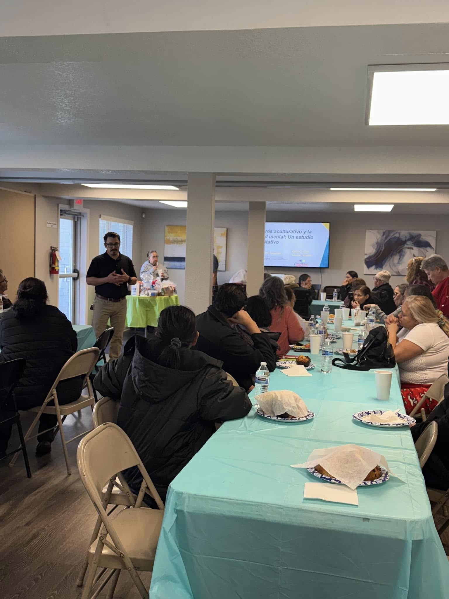

Exploring Acculturative Stress Among Latinos in Aurora | Conectoras de Colorado
2026- OngoingConducted 10 key informant interviews in Spanish to identify drivers of acculturative stress in the Latino population, gain insight into coping mechanisms, and explore what can be done to mitigate the negative health outcomes that come with having to adapt to a new environment, and navigating complex systems. Recorded and cleaned transcripts from participants then used Atlas ti to identify themes. Prepared the findings into a report and presentation for the community organization I partnered with.
